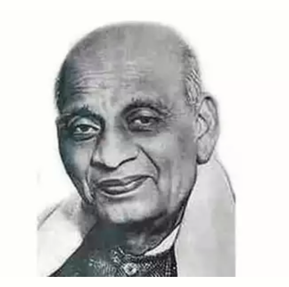

Sardar Vallabhbhai Patel
(31 October 1875 – 15 December 1950)
Valla bhai Jhaverbhai Patel popularly known as Sardar Patel, was the first Deputy Prime Minister and Home Minister of India. He was a major political and social leader of India. He is Credited with achieving political integration of India. He played a leading role in the Indian Freedom struggle. His Brave deeds earned Vallabhbhai Patel the title of the Iron Man Of India. Patel was posthumously awarded the Bharat Ratna, India's highest civilian honour, in 1991.

Childhood and Earlydays
Vallabhbhai Patel was born on 31st October 1875 to an influential Gujarati family in the village of Karamsad, a of Gana, a village 3 miles from Karamsad, in 1893. Gujarat. Sardar Patel was the fourth of the six children of his father, Jhaveribhai. He had three elder brothers, and a younger brother and sister.
Married to Jhaverd Much of his education was attained in schools in Nadiad, Petlad and Borsad. He completed his matriculation at the age of 22, in 1897.
He studied on borrowed books from lawyers, worked hard and saved funds and cracked the examination in two years. In the early years of practice, Vallabhbhai had a reputation of being a fierce and skilled lawyer. He practiced in Godhra, Borsad and Anand. He even served as the first chairman of the E.M.H.S (Edward Memorial High School).
Had a daughter, Maniben, in 1904.
had a son, Dahyabhai, in 1906
It was in the year 1911 that Vallabhbhai Patel finally lived his dream as he travelled all the way to England. He topped the 36-month course which he had enrolled in and completing a 36-month course in 30 months. It was a remarkable feat as Patel had no formal college education, unlike most others.
Entry in Politics
In 1917, Patel stood for an election to become the sanitation commissioner of Ahmedabad which he won comfortably. Meanwhile, Patel’s interest in politics grew, as he heard Gandhiji speak for the Swadeshi Movement. Inspired by the words of Gandhi, Patel started active participation in the Indian independence movement.
In September 1917, Patel had given a speech in Borsad, encouraging Indians nationwide to sign Gandhi's petition demanding Swaraj – self-rule – from Britain.
Patel won an election to become the sanitation commissioner of Ahmedabad in 1917.
In 1920, Patel was nominated and elected as the President of the newly formed Gujarat Pradesh Congress Committee. He supported the non-cooperative movement initiated by Gandhi.
When Gandhi was in prison, Patel was asked by Members of Congress to lead the satyagraha in Nagpur in 1923 against a law banning the raising of the Indian flag.
Patel was elected Ahmedabad's municipal president in 1922, 1924, and 1927; during his terms, he oversaw improvements in infrastructure: the supply of electricity was increased, and drainage and sanitation systems were extended throughout the city. The school system underwent major reforms.
In 1928, the village of Bardoli suffered from famine and steep tax hikes. To curb the problem, Sardar Patel organized a struggle, which called for non-violent unity from the villagers and a demand for complete denial of the taxes to the Government.
After the signing of the Gandhi–Irwin Pact, Patel was elected president of Congress for its 1931 session in Karachi
Patel's position at the highest level in the Congress was largely connected with his role from 1934 onwards (when the Congress abandoned its boycott of elections) in the party organisation. Based at an apartment in Mumbai, he became the Congress's main fundraiser and chairman of its Central Parliamentary Board, playing the leading role in selecting and financing candidates for the 1934 elections to the Central Legislative Assembly in New Delhi and for the provincial elections of 1936.
Role in India
Patel’s untiring efforts and relentless appeals reaped fruitful result as he successfully persuaded 565 states, except the three states of Jammu and Kashmir, Junagadh, and Hyderabad. He used the tactics of invoking patriotism in the Indian rulers and proposed favourable terms for the merger
As for Kashmir, it was during the Pakistani invasion of Kashmir in September 1947 that Kashmir's monarch acceded to India. Patel then oversaw India's military operations to secure Srinagar and the Baramulla Pass. In the days to follow, Indian forces retrieved much territory from the invaders.
Sardar Vallabhbhai Patel died on 15 December 1950 at the age of 75 in Mumbai. He will ever be remembered for his great works.
Patel was posthumously awarded the Bharat Ratna, India's highest civilian honour, in 1991.
It was announced in 2014 that his birthday, 31 October, would become an annual national celebration known as Rashtriya Ekta Diwas (National Unity Day).